El continente europeo está conformado por las tierras emergidas entre el océano Atlántico oriental y los montes Urales y Cáucaso. Tiene una superficie de 22 969 900 km2, por lo que se constituye en el segundo continente de menor extensión luego de Oceanía.
-
01
Geografía física y humana de Europa
Open or CloseEuropa se ubica en el hemisferio norte. De acuerdo con su posición geográfica, este continente limita al norte con el océano Glacial Ártico; al sur, con el mar Mediterráneo, el estrecho de Dardanelos, el mar de Mármara, el estrecho de Bósforo, el mar Negro y los montes Cáucaso; al oeste con el océano Atlántico; y al este limita con Asia, de la que se separa a través de los montes Urales, el río Ural y el mar Caspio.
Por su posición astronómica, los siguientes son los puntos extremos que marcan su latitud y su longitud:
- Latitud: al sur, el cabo Matapán, ubicado en la Península Balcánica, a los 36º de latitud norte; y al norte, el cabo Norte en la Península Escandinava, localizado a los 71º de latitud norte.
- Longitud: al este, en la desembocadura del río Kara en Rusia, ubicada a 65º de longitud este; y al oeste, el cabo de San Vicente en Portugal localizado a 9º y 20' de longitud este.
01.1El aspecto físico de Europa
01.1.1El relieve y el clima
En el continente europeo se alzan distintos macizos y sistemas montañosos. Sus principales cordilleras son: los Alpes, los Pirineos, los Cárpatos, los Urales y el Cáucaso. Su llanura más importante es la Gran Llanura Europea que se extiende desde el oeste, en los límites de los montes Pirineos y el océano Atlántico, hasta el este, en los montes Urales.
Cuenta con grandes penínsulas, como la Ibérica, la Itálica, la Balcánica y la Escandinava. También sobresalen distintas islas y archipiélagos, como las islas Británicas y las Baleares, además de Córcega, Cerdeña y Sicilia.
Además, cuenta con mesetas y macizos, entre los que se encuentran la meseta de Finlandia, la Ibérica y la Central Rusa, los macizos Ibérico y Francés, y el escudo Escandinavo.
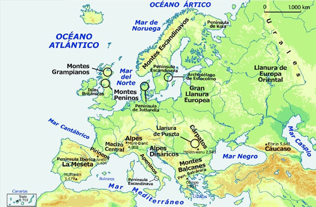Europa es una gran península que está unida a Asia por los montes Urales y el Cáucaso. Las cumbres más altas del continente son el Elbrús (5642 m) en el Cáucaso, y el Mont Blanc (4808 m) en los Alpes.
La posición geográfica y astronómica de Europa determina su clima. Predominan cuatro climas en este continente: el mediterráneo, el oceánico, el continental, y el polar y de montaña.
Aprende
Climas del continente europeo CLIMA UBICACIÓN Y CARACTERÍSTICAS El clima oceánico o atlántico Es un clima propio de la costa occidental de Europa. Los territorios con este clima se extienden desde el sur de Portugal hasta Noruega, pasando por el norte de España, Francia, Bélgica, Países Bajos, Reino Unido, República de Irlanda, Dinamarca y Alemania.
Características del clima oceánico o atlántico
Temperaturas: inviernos suaves y veranos frescos.
Precipitaciones: abundantes.
Paisaje: la vegetación es abundante y frondosa. Está formada por bosques atlánticos y prados. Abundan los bosques de hoja caduca (robles, castaños, etc.), así como los prados y las landas.El clima mediterráneo El clima mediterráneo domina en los territorios de la costa meridional de Europa, es decir, Francia, Italia, Croacia, Bosnia-Herzegovina, Albania, Macedonia, Grecia, sur de Bulgaria, costa mediterránea de Turquía y Chipre.
Características del clima mediterráneo
Temperaturas: inviernos suaves y veranos calurosos.
Precipitaciones: escasas.
Paisaje: está muy humanizado. Sus espacios naturales se identifican por sus bosques de hoja perenne (pinos y encinas), sotobosque de matorral, garriga y maquia. También existen zonas áridas.El clima continental Localizado en las regiones interiores de Europa, como el centro de Francia, el sur y este de Alemania, la República Checa, Polonia, Rusia, Ucrania, Eslovaquia, Hungría y Rumania.
El paisaje de la Europa continental es uno de los más humanizados. Es reconocible por sus extensas llanuras, aunque también presenta importantes sistemas montañosos en el sur (los Alpes) y el este (el Cáucaso).
Características del clima continental
Temperaturas: inviernos fríos y veranos calurosos.
Precipitaciones: escasas.
Paisaje: en las zonas que se ubican hacia al norte crece la taiga (bosque de coníferas), con escasa influencia de la acción humana. Al sur aparecen las praderas y estepas, predominan los robles y las hayas. Son tierras con suelos muy fértiles, que favorecen la agricultura extensiva.El clima polar y de montaña Clima polar
El clima polar se localiza en Islandia, en el norte de Escandinavia y en el norte de Rusia.
Características del clima polar
Temperaturas: muy bajas.
Precipitaciones: escasas (presencia casi permanente de nieve).
Paisaje: muy poco humanizado. El hielo y las bajas temperaturas impiden el crecimiento de vegetación, lo que hace que existan extensos desiertos fríos. Durante los meses posteriores al deshielo, en el hemisferio norte, aparece la tundra.
Clima de montaña
El clima de alta montaña en Europa se encuentra en zonas superiores a los 1200 m, principalmente en los Alpes, los Pirineos, los Alpes Escandinavos y el Cáucaso.
Características del clima de montaña
Temperaturas: bajas todo el año.
Precipitaciones: abundantes con nieve en las cimas.
Paisaje: en función de la altitud se encuentran desde bosques con árboles de hoja perenne y muchos arbustos en las zonas más bajas, hasta bosques de coníferas y pastos, en las áreas más altas.Practica
01.1.2La hidrografía
Europa cuenta con numerosos ríos. A excepción del Volga, el Danubio y el Rin, los ríos europeos se caracterizan por ser cortos y poco caudalosos.
Se distinguen cinco vertientes fluviales en función del lugar donde desemboquen sus ríos: vertiente ártica, atlántica, mediterránea, del mar Negro y del mar Caspio.
- Vertiente ártica: formada por los ríos que desembocan en el océano Ártico, los cuales permanecen helados durante el invierno. Los más importantes son el Pechora y el Dviná Septentrional.
- Vertiente atlántica: comprende los ríos que desembocan en el océano Atlántico. La mayoría de estos ríos son largos y caudalosos. Los más importantes son el Dviná Occidental, el Vístula, el Oder, el Elba, el Rin, el Sena, el Loira, el Garona, el Duero, el Tajo, el Guadiana y el Guadalquivir.
- Vertiente mediterránea: se caracteriza por ríos cortos que desembocan en el mar Mediterráneo. Los más importantes son el Ebro, el Ródano, el Po y el Tíber.
- Vertiente del mar Negro: los ríos que desembocan en el mar Negro son caudalosos. Los principales ríos de esta vertiente son el Danubio, el Dniéster y el Dniéper. Otro importante río es el Don, el cual desemboca en el mar de Azov, que se comunica con el mar Negro.
- Vertiente del mar Caspio: los ríos que desembocan en el mar Caspio son largos y caudalosos. Los más importantes son el Ural y el Volga.
¡Recuerda!
Las vertientes son áreas del relieve cuya inclinación determina que los ríos desemboquen en un mismo océano o mar.
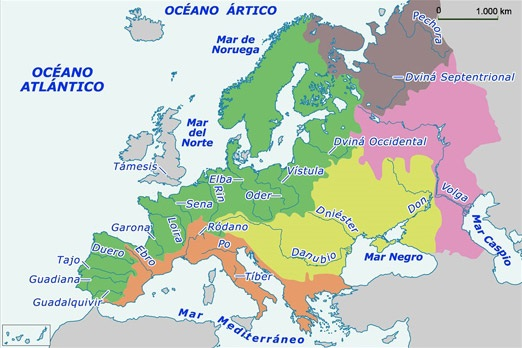En Europa hay ríos de diferentes caudales y extensiones. Los más largos y caudalosos son el Rin (1326 km), el Danubio (2850 km) y el Volga (3531 km)
Por su parte, los lagos europeos no son muy grandes. La mayor parte se concentra en la zona báltica. Sobresalen el Ladoga, el más extenso del continente, y el Onega. En la zona de los Alpes los lagos más importantes son el Léman y el Constanza.
Las costas europeas están bañadas por distintos mares y océanos:
- El océano Atlántico: baña las costas occidentales del continente. Sus principales cuencas son las del mar Cantábrico, el mar del Norte, el mar de Noruega y el mar Báltico.
- El océano Ártico: sus principales cuencas en el continente son el mar de Barents y el mar Blanco.
- El mar Mediterráneo: baña las costas meridionales del continente. Se conecta con el Atlántico a través del estrecho de Gibraltar, y se comunica con el mar de Mármara y el mar Negro por los estrechos de los Dardanelos y del Bósforo. Sus principales cuencas son las del mar Tirreno, el mar Adriático, el mar Jónico y el mar Egeo.
- El mar Negro: mar interior que baña las costas de Ucrania, Rusia, Georgia, Turquía, Bulgaria y Rumania. En su cuenca se incluye el mar de Azov.
Practica
01.2El aspecto humano de Europa
Europa está conformada por un total de 46 Estados, siendo Rusia el más extenso y el Vaticano el más pequeño. A pesar de ser uno de los continentes con menor extensión, tiene una gran diversidad cultural y lingüística.
Sus condiciones políticas y económicas son especiales, principalmente, porque gran parte de los países que la forman se encuentran organizados en la Unión Europea.
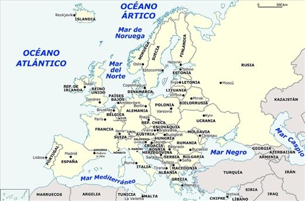Europa está conformada por 46 Estados, de estos Rusia es el más extenso y el Vaticano el más pequeño.
01.2.1La población
Europa es un continente habitado por más de 700 millones de personas. Su población tiene una esperanza de vida de 76,9 años en los hombres y 82,7 años en las mujeres.
Se caracteriza por un bajo crecimiento demográfico, con bajas tasas de natalidad y de mortalidad. En cuanto a las tasas de natalidad, según cifras de la Unión Europea, hay 10,27 nacimientos por cada 1000 habitantes. Por su parte la mortalidad es de 10,05 muertes por cada 1000 habitantes.
Aunque predomina la población blanca, Europa se caracteriza por una rica diversidad étnica. Esta diversidad tiene origen en su historia, especialmente por las invasiones sucesivas, las guerras, la formación y caída de varios imperios y los constantes procesos de migración. Los principales grupos étnicos que conforman Europa son: nórdicos, eslavos, celtas y mediterráneos.
Actualmente, los ciudadanos europeos comparten una serie de derechos comunes, que se recogen en la Carta de Derechos Fundamentales de la Unión Europea. En ella se reconocen los derechos, libertades y principios de todos los ciudadanos de los países de la Unión Europea.
¡Recuerda!
En la Carta de Derechos Fundamentales se reconocen los siguientes derechos, libertades y principios a todos los ciudadanos de la Unión Europea:
- Igualdad ante la ley.
- No discriminación por razón de sexo, edad, raza, origen, lengua, religión, opinión política, orientación sexual, etc.
- Libertad profesional y derecho a trabajar.
- Libertad de circulación y de residencia.
Si quieres conocer el contenido de la Carta de Derechos Fundamentales de la Unión Europea, consulta el sitio web del Parlamento Europeo [VER].
01.2.2Las características políticas
La principal característica política del continente europeo es la organización de algunos de sus países en la Unión Europea.
Los orígenes de la Unión Europea se encuentran en el Tratado de la Comunidad Europea del Carbón y del Acero, firmado en París en 1951. A través de ese Tratado, seis países europeos crearon la Comunidad Europea del Carbón y del Acero: Alemania, Bélgica, Francia, Italia, Luxemburgo y los Países Bajos. En este acuerdo, los países se comprometieron a trabajar conjuntamente en torno al control de la producción de acero y sus usos civiles y militares.
¡Recuerda!
La Segunda Guerra Mundial fue un conflicto bélico en el que participaron la Alemania nazi y el Imperio japonés, que fueron enfrentados por otros Estados conocidos como los Aliados. Esta guerra se desarrolló entre 1939 a 1945 con el fin de dominar militarmente a Europa y Asia. Durante su desarrollo, Europa quedó destruida.
Con el fin de impulsar la recuperación económica del continente y lograr una paz duradera, se dieron los primeros pasos en la construcción de un proyecto común europeo.
En 1957 se firmó el Tratado de Roma. A través de este tratado se constituyó la Comunidad Económica Europea (CEE) o Mercado Común Europeo. Este tratado quedó redefinido por el Tratado de Maastricht (1992), en el que la CEE pasó a denominarse Unión Europea (UE).
El nacimiento de la Unión Europea representó un paso más allá de la simple unión comercial y aduanera. Significó también un importante avance hacia la consecución de una verdadera comunidad económica y política europea.
Actualmente, la Unión Europea está conformada por 28 países y cuenta, aproximadamente con 500 millones de personas.
La Unión Europea tiene como temas estratégicos de su trabajo:
- La eliminación de controles fronterizos y derechos de aduana.
- El establecimiento de acuerdos para la protección del medio ambiente.
- La construcción de carreteras y líneas de ferrocarril en toda Europa.
- La libertad de los ciudadanos europeos para vivir, trabajar o estudiar en cualquier país que pertenezca a la Unión.
- El tránsito libre entre países sin necesidad de pasaporte.
- La ayuda económica a estudiantes de la Unión Europea.
- La utilización de una moneda única, el euro, que comparten varios de los países pertenecientes a la Unión Europea.
- La utilización de satélites para mejorar el transporte aéreo y terrestre.
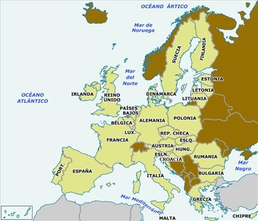En la actualidad, la Unión Europea (UE) está formada por 28 Estados miembros. Además, países como Albania, Macedonia, Montenegro, Serbia y Turquía son candidatos a entrar en la UE.
La Unión Europea
La Unión Europea (UE) es una comunidad supranacional, o asociación de Estados, que tiene como objetivo principal promover la paz y la democracia, e impulsar el progreso económico y social de sus países miembros.
Para su funcionamiento la Unión Europea (UE) cuenta con instituciones propias como las siguientes:
- El Consejo Europeo: formado por el presidente del Consejo, el presidente de la Comisión Europea y los jefes de Estado o de gobierno de los países miembros. Orienta la política comunitaria.
- El Consejo de la UE: reúne a los ministros de los países miembros. Aprueba leyes y coordina las actuaciones de los países miembros.
- La Comisión Europea: formada por el presidente de la Comisión y los comisarios europeos, ejerce el poder ejecutivo. Ejecuta los acuerdos adoptados por el Consejo.
- El Parlamento Europeo: formado por 754 eurodiputados, elegidos de forma democrática cada cinco años, ejerce el poder legislativo. Elabora leyes, controla al Consejo y la Comisión, y aprueba los presupuestos.
- El Tribunal de Justicia: formado por jueces comunitarios, ejerce el poder judicial. Garantiza el cumplimiento de las leyes europeas.
01.2.3El aspecto económico
La economía de Europa se caracteriza por el mercado único, conformado por los diferentes países de la Unión Europea, reconoce la libre circulación de personas, bienes, servicios y capitales (dinero).
¡Recuerda!
La firma del Acuerdo de Schengen (1985) hizo posible la libre circulación de personas y mercancías en la UE. En la actualidad, el espacio Schengen está formado por todos los Estados miembros de la Unión Europea (salvo la República de Irlanda y el Reino Unido), más algunos países no miembros, como Suiza, Islandia, Noruega y Liechtenstein.
La Unión Europea tiene su propia moneda, el euro, desde el 1º de enero de 2002. Sin embargo, no todos sus Estados miembros la utilizan [VER]. En algunos países siguen en curso las antiguas monedas nacionales, como sucede con la libra esterlina en el Reino Unido [VER].
Los Estados que utilizan el euro se agrupan en la llamada Eurozona. Para pertenecer a la zona euro no es necesario ser miembro de la Unión Europea, tal como sucede con Andorra, Mónaco, Montenegro, San Marino y la Ciudad del Vaticano. En la actualidad, la Eurozona está formada por 18 países europeos.
La economía de la Unión Europea es considerada como una de las más importantes del mundo. Concentra aproximadamente el 20 % de las importaciones y exportaciones del mundo. Es la primera economía exportadora, con un 15,4 %, seguida por China y Estados Unidos. Sin embargo, durante los últimos años se ha hablado de la "crisis económica europea" que desde el año 2008 ha afectado la economía de la Unión. Con el fin de superar esta problemática, la Unión Europea ha impulsado una serie de mecanismos comunitarios para conseguir la recuperación económica de los países más afectados por esta crisis.
La economía del sector primario del continente europeo, incluyendo los países miembros y no miembros de la UE, está altamente tecnificada. Entre sus principales cultivos se encuentran los cereales, la vid, el olivo y la remolacha.
La ganadería de Europa produce ganado ovino, bovino y porcino. Por su parte, la pesca es industrial y se desarrolla en países como Islandia, Rusia, Reino Unido, Noruega, Dinamarca y España.
La explotación forestal se realiza principalmente en Rusia, Alemania, Austria, Suiza, Finlandia, España y Francia.
Europa es un continente con un amplio desarrollo del segundo sector de la economía o de las manufacturas. Los países que se destacan en la producción industrial son Alemania, Rusia, Italia, Reino Unido y Francia. Las industrias más destacadas en este continente son la automotriz, química, electrónica y metalúrgica. Cuenta además con importantes fábricas de armamento, equipos eléctricos, maquinaria, aviones y equipos aeroespaciales.
El sector terciario o de los servicios es el que ofrece mayor empleo en el continente. Se concentra principalmente en el transporte, el comercio y el turismo. El comercio exterior es una parte destacada de su economía: importa petróleo y materias primas y exporta productos industriales.
Este continente es además uno de los principales destinos turísticos a nivel mundial. Francia, España, Reino Unido, Italia, Alemania y Austria son algunos de los países más visitados.
01.3Consolidación
Actividades para consolidar lo que has aprendido en esta sección.
-
02
Geografía física y humana de Asia
Open or CloseAsia es el continente más grande y poblado del planeta tierra, ocupando la mayor parte del hemisferio oriental. En Asia se encuentra, además, la cuna de las civilizaciones más antiguas de la historia humana y de la mayoría de las religiones que se practican en la actualidad, así como algunas de las economías más grandes del mundo actual.
De acuerdo con su posición geográfica, Asia limita al occidente con Europa por los montes Urales y el Cáucaso, y al oriente con el océano Pacífico. Al norte limita con el océano Glacial Ártico, y al sur, con el océano Índico.
El continente asiático ocupa gran parte del hemisferio norte y se encuentra en su mayor parte al este del meridiano de Greenwich. Una pequeña porción insular de este continente se ubica en el hemisferio sur.
Por su posición astronómica, los siguientes son los puntos extremos que marcan su latitud y su longitud:
- Latitud: al norte, el cabo Molotov en Rusia, localizado a 81º de latitud norte; al sur, la isla Roti, en Indonesia, ubicada a 11º de latitud sur.
- Longitud: en el extremo occidental del continente está el cabo Baba, en Turquía, ubicado a los 26 º de latitud este; el extremo oriental está en Rusia, en el cabo Dejnev, ubicado a 170º de latitud oeste.
02.1El aspecto físico de Asia
02.1.1El relieve y el clima
En el relieve de Asia predominan los sistemas de cordilleras, las llanuras, los altiplanos y los desiertos. Su principal cordillera es el Himalaya, cuyas cimas sobrepasan los 8000 metros de altura. Su cumbre es el monte Everest, que con 8848 metros de altura es el más alto del mundo.
En cuanto a sus llanuras, sobresalen: la Gran Llanura de Siberia; la llanura de Mesopotamia, que se localiza entre las mesetas del Irán y Arabia; la llanura Indogangética, ubicada entre los ríos Indo y Ganges, y la Gran Llanura China, atravesada por los ríos Yangzi Jiang y Huang He en China.
Además se encuentran altiplanos y desiertos, como Anatolia, Pamir, Irán, Arabia, Yunnan, Tíbet y Mongolia. El principal desierto es el de Gobi.
Entre sus principales penínsulas se encuentran las de Corea, Arabia e Indochina. También sobresalen islas y archipiélagos, como las islas de Borneo y Sumatra, y los archipiélagos de Filipinas y Japón.
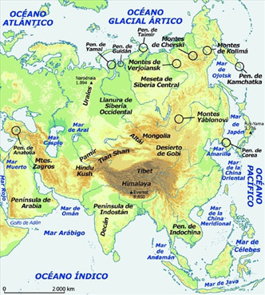Entre las principales unidades del relieve asiático se cuentan la cordillera del Himalaya, la meseta del Tíbet, el desierto del Gobi y el subcontinente indio.
Aprende
El clima de Asia se define por su posición latitudinal y por las alturas de sus tierras. Su principal característica son los monzones, vientos que hacen que en el verano se incremente la humedad y se generen densas precipitaciones, y que durante el invierno se originen vientos secos y fríos, que van del centro de Asia hasta el océano [VER].
Climas del continente asiático CLIMA UBICACIÓN Y CARACTERÍSTICAS Climas cálidos Entre estos climas se encuentran los siguientes: el ecuatorial, el desértico, el tropical húmedo y el tropical seco.
Son propios de las costas de la India, Vietnam, Filipinas, Bangladesh, Birmania, Malasia e Indonesia. En general, se encuentran al sur de Asia, incluida Sri Lanka, gran parte de la India, Laos y Camboya.
Características del clima
Según la región, se puede encontrar:
Temperaturas elevadas en todo el año.
Pluviosidad regular a lo largo del año.
Presencia de tifones y sus consecuentes inundaciones.
Humedad elevada en algunas zonas.
Paisaje, vegetación y fauna
En algunas zonas hay vegetación abundante con predominio de arbustos, matorrales y hierbas. En otros lugares se extienden las sabanas.
De su fauna se desatacan los leopardos, los tigres de Bengala, los monos y los elefantes.Climas templados Entre estos climas se encuentran los subclimas mediterráneo y continental.
Se ubican en Siberia y Anatolia, en las costas mediterráneas de Turquía, Siria, Líbano e Israel. También se encuentran en China, en las llanuras de los ríos Huang He y el Yangzi Jiang, y en la parte sur de Japón y Taiwán.
Características del clima
Temperaturas altas que oscilan entre los 22 a 25º.
Lluvias con mayor presencia en los meses de julio y agosto.
Inviernos con abundantes lluvias.
Veranos cálidos y secos.
Paisaje, vegetación y fauna
Vegetación de maquias (campo cubierto de maleza) con arbustos. En diversas zonas de Japón predomina el bosque de coníferas, donde aún se observan algunos osos, lobos y zorros.
En China la vegetación se caracteriza por el bosque de coníferas y encinos, y la fauna salvaje incluye cabras, osos negros y pandas, y águilas.Climas fríos Las subclases de este clima son el polar y el clima de alta montaña.
Son propios de la franja costera del océano Glacial Ártico, los montes Cáucaso, las partes más altas del Himalaya y el macizo de Altái. Estos climas también se encuentran en el este de Asia, Japón y parte de Siberia.
Características del clima
Temperaturas bajas.
Zonas generalmente deshabitadas.
Inviernos largos y veranos cortos.
Paisaje, vegetación y fauna
En su paisaje predomina la tundra, con pantanos, líquenes y musgos, y la taiga, en las que abundan bosques de coníferas, abetos y pinos. Hay zonas en Japón en las que predominan los bosques.
Entre su fauna se encuentran el tigre siberiano, el reno y el caballo salvaje.Climas secos Las subclases de este clima son el seco estepario y el clima seco desértico. Son característicos de Turquía, parte de la Península Arábiga, Pakistán, Mongolia, parte de la India y Kazajistán.
Características del clima
En el clima seco estepario predomina la escasa vegetación, principalmente matorrales. A esta región natural se le ha dado el nombre de estepa.
En el clima seco desértico hay presencia de vegetación únicamente en los oasis, donde predomina la palma datilera.Practica
02.1.2La hidrografía
Los ríos asiáticos se caracterizan por ser caudalosos. Asia cuenta con el río Yangtsé o Yangzi Jiang, que es el tercer río más largo del mundo luego de los ríos Nilo, ubicado en África, y del Amazonas, localizado en Suramérica. Los ríos se clasifican en función de la vertiente a la que pertenecen de la siguiente manera:
- La vertiente ártica: los ríos que desembocan en el océano Ártico permanecen helados durante el invierno. Los más importantes son el Lena, el Yeniséi y el Obi.
- La vertiente del Pacífico: los ríos que desembocan en el océano Pacífico son muy caudalosos y pueden sufrir crecidas. Los más importantes son el Amur, el Huang He, el Yangzi Jiang y el Mekong.
- La vertiente del Índico: los ríos que desembocan en el océano Índico son caudalosos. Los más importantes son el Tigris, el Éufrates, el Indo, el Ganges y el Brahmaputra.
- La cuenca endorreica: formada por mares y lagos interiores. Los ríos asiáticos que desembocan en el mar de Aral son el Amú Daryá y el Syr Daryá.
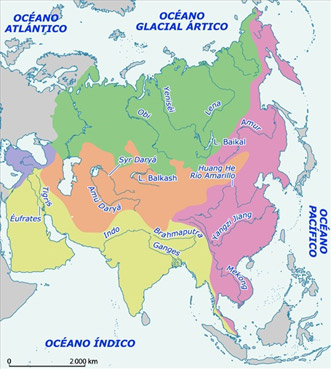Algunos de los ríos más largos de Asia son el Jangzi Jiang (5800 km), el Huang He (4845), el Mekong (4500 km) y el Amur (4416 km).
El continente asiático tiene varios lagos, entre los que se destaca el Baikal. Además, existen tres grandes mares interiores: el mar de Aral, el mar Muerto y el mar Caspio [VER].
Por otro lado, las costas asiáticas están bañadas por distintos mares y océanos:
- El océano Glacial Ártico: baña las costas septentrionales del continente. Su cuenca principal es el mar de Siberia oriental.
- El océano Pacífico: baña las costas orientales del continente. Entre sus cuencas están el mar de Bering, el mar de Japón y el mar de la China oriental, entre otros.
- El océano Índico: baña las costas meridionales del continente. Entre sus cuencas está el mar Rojo, el cual baña las costas orientales de la Península de Arabia.
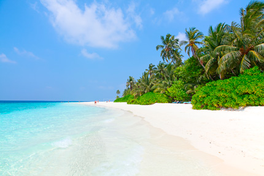La costa de Asia se caracteriza por reunir una gran cantidad de islas. Muchas de ellas, particularmente las localizadas en el océano Índico, tienen un aspecto paradisíaco, como por ejemplo las Maldivas. La mayoría de ellas se vieron afectadas por el devastador tsunami de diciembre de 2004, producido por el terremoto submarino que tuvo lugar frente a la costa de Sumatra, y que causó más de 225 000 víctimas.
02.2El aspecto humano de Asia
Asia, junto con Europa y África, conforman el Viejo Mundo. Al continente asiático pertenecen 45 países. En Asia se encuentran algunas de las ciudades más grandes del mundo: Tokio, Seúl, Pekín, Yakarta, Hong Kong, Bombay, Osaka, Shanghái y Calcuta, entre otras.
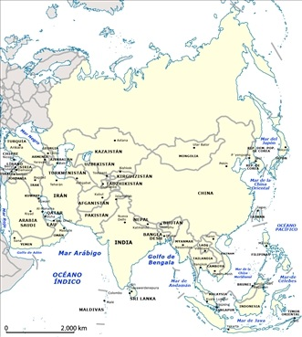Asia es el continente de mayor extensión de la Tierra. Su territorio se reparte entre 45 Estados de extensión muy desigual. La mayor parte de Rusia se encuentra en este continente y los Estados llegan a 46 si se incluye este país. China, India y algunos Estados insulares, como Filipinas, Japón e Indonesia, forman parte de Asia.
Es un continente con diversos contrastes socioculturales, políticos y económicos.
La cultura y las religiones de Asia
Hay varios aspectos que hacen de Asia un continente especialmente rico desde el campo cultural.
Asia es la zona geográfica donde se ubicó una de las culturas más importantes de la historia: la de Mesopotamia. En ella se originaron la escritura y las primeras ciudades.
Además, el continente asiático es el lugar donde nacieron las tres religiones monoteístas del mundo: el islamismo, el judaísmo y el cristianismo. Es, así mismo, la cuna de religiones con significativa tradición histórica y que hoy siguen vivas en las prácticas religiosas de muchas personas: el budismo, el hinduismo, el confucianismo y el sintoísmo [VER].
02.2.1La población
Asía es el continente más habitado del planeta. Cuenta con aproximadamente 4427 millones de habitantes. La población tiene una esperanza de vida de cerca de 67,3 años.
Este continente se caracteriza por la diversidad étnica. Entre las principales etnias se destacan los indígenas (polinesios, melanesios, micronesios), los caucásicos (árabes, judíos, persas, indios, asirios, turcos, rusos); los afrodescendientes y pigmeos.
Esta población se distribuye de manera desigual por el territorio continental. Hay regiones con población muy escasa como Siberia, Tíbet y la Península Arábiga y territorios con una alta concentración poblacional como los de China, India y Japón.
¡Recuerda!
En Asia se encuentran los países más poblados del mundo: China e India. En China la población se ubica principalmente en las costas y en los valles de los ríos Hoang He, Yangzi Jiang, Amur y Si-kiang. También en zonas como Shanghái, Macao, Tianjin, Sichuán y Hong Kong.
En India la mayoría de la población se ubica en el valle del río Ganges y en la zona costera de este país. También existe una gran población en la isla de Java en Indonesia.
En Pakistán, Bangladesh e Indonesia se ubica población predominantemente musulmana. Países como Arabia Saudita, Afganistán y Pakistán se caracterizan por el fuerte integrismo cultural, político y económico. Estos últimos dos países, al igual que Iraq y Palestina, son zonas que presentan permanentes conflictos bélicos.
02.2.2Las características políticas
El continente asiático se divide políticamente en diferentes regiones. Según la Organización de las Naciones Unidas, ONU, estas regiones son: Asia meridional, Asia central, Asia occidental, Asia oriental y Sudeste asiático. También existe la zona norte de Asia, que comprende la porción de la Federación Rusa que se ubica en este continente.
- Asia del Norte es una región en la que se ubican una serie de Repúblicas Autónomas, regiones y óblasts (provincias) que forman parte de la Federación Rusa. El gobierno federal designa la mayor parte de las autoridades de estos entes.
- En los países de Asia central predomina la forma de gobierno presidencialista. Esta región está conformada por países que surgieron de la disolución de la antigua Unión de Repúblicas Socialistas Soviéticas (URSS). Estos incluyen a Kazajistán, Uzbekistán, Turkmenistán, Kirguistán y Tayikistán. Pertenecen actualmente a la Organización para la Seguridad y la Cooperación en Europa -OSCE-, lo cual les permite tener acuerdos con la Unión Europea. Esta organización también tiene alianzas con Estados Unidos.
- Asia meridional: está conformada por Irán, Bangladesh, Nepal, India, Pakistán, Afganistán, Bután, Sri Lanka y Maldivas. Su país más grande y poblado es la India. En esta región se ha constituido la Asociación del Asia Meridional para la Cooperación Regional (SAARC, por su sigla en inglés). Además, los países de Asia meridional presentan diferentes formas de gobierno, aunque todos, con la excepción de Bután, son repúblicas.
Te invitamos a conocer un poco más sobre la India a través de un documental que da cuenta de su arte e historia [VER].
- Asia occidental: ubicada al suroccidente de Asia, es también conocida como el Cercano Oriente. Está conformada por Arabia Saudita, Armenia, Chipre, Bahréin, Catar, Azerbaiyán, Emiratos Árabes Unidos, Israel, Georgia, Iraq, Kuwait, Jordania, Omán, Líbano, Turquía, Siria y Yemen. Es una región caracterizada por una larga historia de tensiones políticas, militares, religiosas y étnicas. Uno de los conflictos más prolongados es el árabe-israelí [VER].
En cuanto a las formas de gobierno en esta región, los siguientes países son Estados republicanos: Turquía, Israel, Armenia, Irán, Iraq, Líbano, Siria, Azerbaiyán y Yemen. Otros siete países de la región se constituyen como Estados monárquicos: Arabia Saudita, Bahréin, Omán, Emiratos Árabes Unidos, Catar, Jordania y Kuwait.
- El Sudeste asiático: se ubica al sur de China y al oriente de la India. Es una región a la que pertenecen países ubicados en el archipiélago malayo y en la parte continental en Indochina. Algunos de ellos son: Singapur, Laos, Papúa Nueva Guinea, Birmania, Tailandia, Camboya, Brunéi, Indonesia, Timor Oriental, Malasia, Filipinas y Vietnam. En estos países se ha instaurado una gran diversidad de formas de gobierno. Algunos de ellos son monarquías (Tailandia, Brunéi, Camboya y Malasia); los demás, cuentan con diferentes modalidades de repúblicas. Los países que conforman esta región se organizan en la Asociación de Naciones del Sudeste Asiático, ASEAN, en la que se agruparon con el fin de avanzar en su desarrollo económico.
- Asia oriental: de acuerdo con la clasificación de la Organización de las Naciones Unidas esta región está integrada por China (República Popular China), Taiwán (República de China), Japón, Corea del Norte (República Popular Democrática de Corea), Corea del Sur (República de Corea) y Mongolia. China es el país más grande y el más poblado. Esta región es reconocida por su diversidad religiosa. Entre sus principales religiones se encuentran el hinduismo, el budismo y el islamismo.
Algunas de las formas de gobierno representativas de la región son: la monarquía parlamentaria de Japón; el Estado comunista de China y Corea del Norte, el Estado presidencialista en Corea del Sur, la República semipresidencialista en Taiwán y la República parlamentaria en Mongolia.
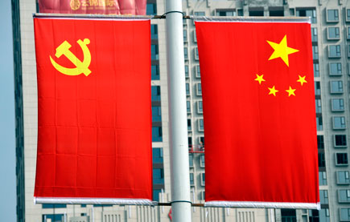La República Popular China es una de las mayores economías de mundo. Es una Estado gobernado por el Partido Comunista.
Organizaciones y asociaciones de Asia
La Organización para la Seguridad y la Cooperación en Europa (OSCE), es un organismo de seguridad regional a la que pertenecen países de Europa, Asia Central y Norteamérica. El objetivo de la organización es la prevención de conflictos entre Europa y sus vecinos y promover el desarrollo social y económico de los países que la conforman.
La Asociación del Asia Meridional para la Cooperación Regional (conocida como SAARC por su nombre en inglés), tiene como propósito principal que los países de esta región trabajen conjuntamente para mejorar la calidad de vida de sus habitantes, por el crecimiento económico y el desarrollo cultural.
La Asociación de Naciones del Sudeste Asiático (ASEAN, sigla por su nombre en inglés) está conformada por Filipinas, Tailandia, Vietnam, Brunéi Darussalam, Malasia, Singapur, Camboya, Laos y Birmania. Busca el crecimiento económico de los países asociados y su integración política y social.
02.2.3El aspecto económico
Asia es un continente que se caracteriza por los contrastes económicos. Por una parte presenta un crecimiento económico muy importante en las últimas décadas, gracias a al desempeño de países como China y Japón. De otro lado, en este continente existen países y zonas que presentan niveles elevados de pobreza [VER].
En general, los países de Asia desarrollan actividades del sector primario, especialmente: agricultura, explotación forestal, ganadería, minería y pesca.
En el sector secundario de la economía, algunos de sus países destacan en la industria automotriz, las nuevas tecnologías y la industria textil. Mientras que en el tercer sector, o de los servicios, algunos países de Asia se destacan por los servicios financieros y las telecomunicaciones.
China es uno de los principales socios comerciales de la Unión Europea y los Estados Unidos, y es una de las dos economías más importantes del mundo en términos del tamaño de su producción, medida a través del Producto Interno Bruto. Su moneda, el yuan, se ubicó a finales del año 2014 en una de las cinco monedas de mayor uso a nivel mundial. Hong Kong, una región administrativa especial de China, es reconocida como la décima potencia comercial del mundo, gracias a los servicios financieros y a su industria textil, electrónica, informática, de electrodomésticos y de telecomunicaciones.
Japón es la mayor potencia económica del mundo, después de Estados Unidos, China y la Unión Europea. Es el país más industrializado de Asia, posee un gran desarrollo tecnológico y progreso industrial [VER].
En la economía de Asia también es importante tener en cuenta a los países conocidos como "Tigres asiáticos" (Corea del Sur, Singapur y Taiwán). Todos ellos se caracterizan por un desarrollo económico elevado durante las últimas tres décadas. Cuentan con un comercio de exportación dinámico y se caracterizan por los rendimientos de sus industrias mecánica, petroquímica, farmacéutica y tecnológica.
La India se caracteriza por su producción agropecuaria, ya que es la cuarta potencia agrícola mundial por sus cultivos de maíz, caña de azúcar, patata y algodón; trigo, mijo, arroz y té. Es el tercer productor de carbón en el mundo y actualmente avanza en la consolidación de su sector terciario, en particular los servicios de software.
02.3Consolidación
Actividades para consolidar lo que has aprendido en esta sección.
-
03
Geografía física y humana de África
Open or CloseÁfrica es un continente que se originó en el periodo Secundario, gracias a la separación del supercontinente Gondwana. Tiene una superficie de 30 312 506 km2, y esta área lo convierte en el tercer continente más grande de la Tierra.
Supercontinente Gondwana
Gondwana fue un supercontinente derivado de la Pangea que se formó en la era Paleozoica. De este gran territorio se originaron África, América del Sur, la Antártida, el Indostán y Australia [VER].
El territorio que constituye África se ubica en los diferentes hemisferios: norte, sur, occidente y oriente. De acuerdo con su posición geográfica, limita al norte con el mar Mediterráneo; al sur con los océanos Índico y Atlántico; al oriente con el canal de Suez, el mar Rojo y el océano Índico; y al occidente con el océano Atlántico.
Los siguientes son los puntos extremos que marcan su posición astronómica:
- Latitud: al norte, Ras ben Sakka, ubicado en Túnez, a los 37º 21' de latitud norte; y al sur el cabo Agujas en Sudáfrica, localizado a los 34° 51' 15" de latitud sur.
- Longitud: al este su punto más occidental se ubica en la isla de Santo Antão en Cabo Verde a los 17° 33' 22" de longitud oeste; y al oriente el punto más extremo es el cabo Ras Hafun en Somalia, ubicado a los 51° 27' 52" de longitud este.
03.1El aspecto físico de África
03.1.1El relieve y el clima
África es un continente conformado en su gran mayoría por mesetas. También se caracteriza por sus grandes desiertos.
Sus mesetas abarcan la mayor parte del territorio. Las principales son: la meseta del Sahara; la región del Congo; el Kalahari; la meseta de los Grandes Lagos; y la meseta etíope-somalí. Sus cordilleras más importantes son el Atlas, el Drakensberg y los montes Kilimanjaro, que cuentan con volcanes que actualmente se encuentran inactivos.
Es un continente de grandes desiertos, como el Sahara, el Kalahari y el de Namibia. Entre sus altiplanos se destacan los macizos de Ahaggar y de Etiopía, y entre sus valles y depresiones, están los del Nilo y el del Rift.
Su principal isla es Madagascar.
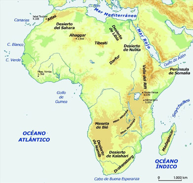Entre las principales unidades del relieve africano se cuentan el macizo del Atlas, el desierto del Sahara, el valle del Nilo y el Gran Valle del Rift.
Aprende
En África predominan el clima ecuatorial, el clima tropical o de sabana, el clima mediterráneo o templado y el clima seco.
Los climas de África CLIMA UBICACIÓN Y CARACTERÍSTICAS El clima ecuatorial El clima ecuatorial es propio de las zonas del Congo, Zaire, Camerún, Gabón y Guinea Ecuatorial.
Características del clima ecuatorial
Temperaturas: altas durante todo el año.
Precipitaciones: abundantes.
Paisaje, vegetación y fauna
Cuenta con vegetación de selva ecuatorial, caracterizada por su densidad y gran altura. Predominan, además, los matorrales que impiden el fácil acceso a los territorios.
Su fauna es diversa. Entre otros, se destacan los felinos, los gorilas, los chimpancés, los elefantes y los hipopótamos.El clima tropical o de sabana El clima tropical o de sabana domina en los territorios de Kenia, Tanzania, Nigeria, Sudán del Sur, Zambia y Angola.
Características del clima tropical o de sabana
Temperaturas: presenta altas a lo largo de todo el año.
Precipitaciones: hay diferencias entre un período de mayor pluviosidad que dura alrededor de siete meses al año, y una fase de lluvias escasas en la estación seca que dura cerca de cinco meses al año.
Paisaje, vegetación y fauna
El paisaje se caracteriza por una vegetación compuesta principalmente por hierbas gramíneas silvestres que pueden alcanzar hasta tres metros de altura. En las sabanas se encuentran pocos árboles y arbustos.
Su fauna es una de las más diversas del mundo, caracterizada por búfalos, cebras, elefantes, rinocerontes, jabalíes, leopardos, leones y hienas, entre otros.El clima mediterráneo o templado El clima mediterráneo se ubica en el norte de África y en la región del Cabo en Sudáfrica.
Características del clima mediterráneo
Temperaturas: se caracterizan por inviernos suaves y veranos calurosos.
Precipitaciones: son escasas.
Paisaje, vegetación y fauna
El paisaje se caracteriza por una vegetación de coníferas, como enebros, pinos, cipreses y sabinas. En las zonas más áridas se encuentran arbustos y plantas crasas (plantas de hojas y tallos gruesos que guardan agua) como los cactus.El clima seco El clima seco en África se localiza en los desiertos del Sahara, Nubia, Libia y Kalahari, ubicados principalmente en los trópicos y en algunas regiones de latitudes templadas.
Características del clima árido o seco
Temperaturas: son muy bajas en las noches y muy altas en el día. En el mes de julio, durante el verano, la temperatura supera los 32,2 °C. En los inviernos, la temperatura de las noches se ubica por debajo de los cero grados centígrados.
Precipitaciones: son escasas. En las zonas de mayores alturas suelen ser comunes las heladas.
Paisaje y vegetación
El paisaje es eminentemente árido y desértico, en muchas regiones rocoso o cubierto de dunas de arena. La vegetación es muy escasa y se encuentra principalmente en los oasis.03.1.2La hidrografía
Los ríos africanos se clasifican en función de la vertiente a la que pertenecen de la siguiente manera:
- La vertiente mediterránea: los ríos que desembocan en el mar Mediterráneo son cortos e irregulares, y permanecen secos la mayor parte del año. La excepción es el Nilo, el río más largo del mundo.
- La vertiente atlántica: los ríos que desembocan en el océano Atlántico son muy caudalosos. Los más importantes son el Senegal, el Níger, el Congo y el Orange.
- La vertiente índica: los ríos más importantes que desembocan en el océano Índico son el Zambeze y el Limpopo.
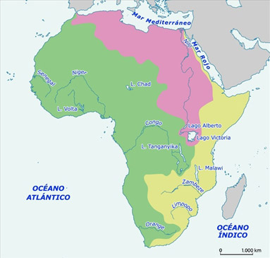En África hay zonas muy lluviosas y otras donde apenas llueve. En este continente encontramos el río más largo del mundo, el Nilo (6671 km). También tienen un largo recorrido los ríos Congo (4200 km) y Níger (4160 km).
Las costas africanas están bañadas por distintos mares y océanos, así:
- El mar Mediterráneo: baña las costas septentrionales del continente y lo separa de Europa.
- El océano Atlántico: baña las costas occidentales del continente.
- El océano Índico: baña las costas orientales del continente.
- El mar Rojo, que constituye un sector del océano Índico, baña las costas nororientales.
Los lagos africanos
El continente africano tiene algunos de los lagos más grandes del mundo:
- El lago Volta (8482 km2).
- El lago Chad (16 000 km2).
- El lago Alberto (5400 km2).
- El lago Victoria (68 100 km2).
- El lago Tanganyika (32 893 km2).
- El lago Malawi (30 800 km2).
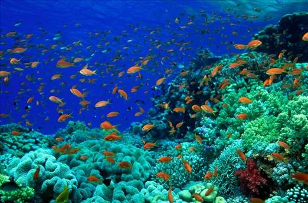El mar Rojo se caracteriza por tener un índice de salinidad muy elevado, entre 37 y 43%, y su temperatura media varía entre 25 y 35º C.
Practica
03.2El aspecto humano de África
África se ha definido como la cuna de la humanidad. De acuerdo con investigaciones científicas, los primeros seres humanos proceden de este continente. El continente está formado por 54 países, de los cuales todos, a excepción de Marruecos, conforman la organización de Estados denominada Unión Africana.
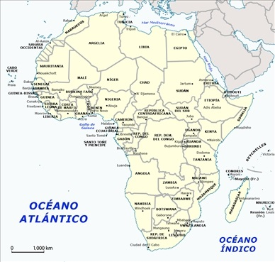África es el tercer continente más extenso del planeta. Su territorio está formado por 54 Estados. Al observar las fronteras de los países africanos se hace evidente el reparto que hicieron las potencias coloniales europeas en el siglo XIX y XX. Sudán del Sur es el Estado africano más joven.
03.2.1La población
En África vive el 32% del total de la población mundial. Habitan en este continente alrededor de 1100 millones de personas, principalmente de raza negra.
La mayor densidad de población es de 50 a 100 habitantes por kilómetro cuadrado, y se ubica en el norte de África, en las costas occidentales del continente, en las zonas de montaña de Sudáfrica y del oriente africano, y en el valle del Nilo.
Aunque África es principalmente rural, en los últimos años ha aumentado el desplazamiento hacia las zonas urbanas. Una de las grandes aglomeraciones urbanas se concentra en la ciudad de El Cairo.
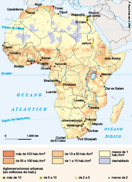En este mapa se pueden identificar las zonas más densamente pobladas y las menos densamente pobladas del continente africano. Regiones como los desiertos de Sahara y Kalahari se hallan casi totalmente deshabitadas, mientras que los valles fluviales, las costas y la región de los Grandes Lagos y la meseta de Etiopía están muy densamente pobladas.
Desde el punto de vista étnico, África está compuesta por una gran diversidad de grupos que se diferencian entre sí por su lengua, su historia, sus costumbres y sus prácticas religiosas. A lo largo del continente se hablan más de 1500 lenguas y, entre sus principales religiones, se practican cultos ancestrales africanos, el cristianismo y el islam.
Este continente también se caracteriza por conflictos armados. Varios de estos conflictos son producto de guerras civiles que tuvieron su origen en la división política artificial del territorio africano durante el proceso de colonización europea. La repartición del espacio y la definición de fronteras han producido luchas territoriales debido a que algunas etnias fueron divididas en varios países, lo que dio origen a enfrentamientos por la unificación territorial. En otros casos, el conflicto surgió porque en una misma zona habitan diversas etnias que se disputan el territorio. Adicionalmente, otros conflictos han surgido como reacciones civiles contra regímenes autoritarios y, más recientemente, por rivalidades con motivaciones religiosas.
Reparto de África
El reparto de África fue regulado política y comercialmente por el Tratado de Berlín de 1885 (General Act of the Berlin Conference), como acuerdo final de la Conferencia de las potencias europeas (1884 - 1885) sobre el tema.
Entre 1885 y 1914 el Reino Unido tuvo cerca del 30% de la población de África bajo su control, 15% fue de Francia, 9% de Alemania, 7% de Bélgica y 1% para Italia [VER].
03.2.2Las características políticas
Una de las principales características políticas del continente africano es su organización en la denominada Unión Africana (UA). De los 54 Estados independientes que conforman el continente, 53 pertenecen a esta Unión. La excepción es Marruecos, que se apartó de las instituciones continentales como respuesta al reconocimiento de la independencia de Sahara Occidental por parte de la comunidad internacional [VER].
La Unión Africana surgió a finales de 1999 a través de la Declaración de Sirte y entró en funciones a partir de 2002. Su principal objetivo es el proceso de integración de los países miembros con miras a mejorar la economía y a enfrentar los problemas sociales y políticos. Actualmente, las principales metas de la Unión Africana son:
- Mantener la unidad y la solidaridad entre los Estados de África.
- Erradicar en el continente cualquier vestigio de la colonización y el apartheid, y promover la paz y la estabilidad política.
- Desarrollar procesos de cooperación para el desarrollo económico y social.
- Proteger la soberanía y la integridad territorial.
- Promover la cooperación internacional en el marco de los criterios establecidos por la Carta de las Naciones Unidas y la Declaración de Derechos Humanos.
- Fomentar la integración política y socioeconómica del continente.
- Promover la protección de los derechos humanos establecidos en la Carta Africana de Derechos Humanos.
- Impulsar el desarrollo sostenible en los ámbitos económico, social y cultural.
- Promover la investigación en ciencia y tecnología.
- Trabajar con organismos internacionales en la erradicación de enfermedades y la promoción de la salud.
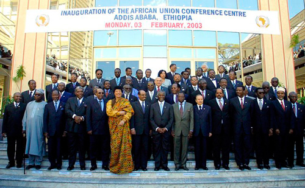La Unión Africana surgió a finales de 1999 a través de la Declaración de Sirte, en parte siguiendo el ejemplo de la Unión Europea, y de este modo sustituyó a la Organización para la Unidad Africana, que se disolvió en 2002.
Proceso de consolidación de la Unión Africana
- Sirte: en la Declaración adoptada en una cumbre extraordinaria realizada en Sirte (Libia) en 1999 se decidió establecer una Unión Africana (UA). Esta organización reemplazó a la antigua Organización para la Unidad Africana.
- La Cumbre de Lomé (2000) adoptó el Acta Constitutiva de la Unión.
- La Cumbre de Lusaka (2001) señaló la hoja de ruta para la implementación de la UA.
- La Cumbre de Durban (2002) puso en marcha la UA y convocó el primer período de sesiones de la Asamblea de la Unión [VER].
Con el fin de cumplir sus propósitos, la Unión Africana se organiza en los siguientes estamentos:
- La Asamblea de Jefes de Estado y de Gobierno: es el máximo órgano de la Unión.
- El Consejo Ejecutivo: en él participan los ministros o las autoridades designadas por los gobiernos de los Estados miembros.
- El Comité de Representantes Permanentes: apoya al Consejo Ejecutivo.
- El Consejo de Paz y Seguridad.
- El Parlamento Panafricano: encargado de promover la participación de los pueblos en el gobierno, el desarrollo y la integración económica del continente.
- El Consejo de la Cultura: es un órgano consultivo integrado por diferentes grupos sociales y profesionales de los Estados miembros.
- Los comités técnicos especializados: analizan temas agrícolas, monetarios, financieros, de comercio, de inmigración, de industria, de ciencia y tecnología, y de recursos naturales y medio ambiente, entre otros.
- La Comisión de la Unión Africana: es una comisión encargada de representar la organización, defender sus intereses y desarrollar los programas y políticas a favor de los Estados miembros. Es la institución ejecutiva o administrativa de la Unión, conformada por un presidente ejecutivo, un vicepresidente y ocho comisionados, y su sede está en Addis Abeba, en Etiopía.
La Unión cuenta además con instituciones financieras, como el Banco Central de África, el Fondo Monetario Africano y el Banco Africano de Inversiones.
03.2.3El aspecto económico
Económicamente, África se considera como una de las regiones del mundo más afectadas por la pobreza. Al mismo tiempo, cuenta con más del 95% de las reservas mundiales de cromo y del 60% de las reservas mundiales de diamantes. Además, se destaca como fuente de recursos, tales como hierro, coltán, cobalto, oro, cobre, uranio, manganeso, vanadio, platino y petróleo.
El sector económico predominante es el primario. Se produce cacao y café y se explotan recursos minerales, que son la principal exportación de algunos países: petróleo (Nigeria, Sudán), diamantes (Angola, Sudáfrica, Sierra Leona), fosfatos (Marruecos), gas natural (Argelia), platino, cromo y oro (Sudáfrica).
El sector secundario es casi inexistente. Un porcentaje significativo de las industrias de este continente se ubica en Sudáfrica, incluida la industria del acero, automotriz, material ferroviario y maquinaria minera, mientras que Marruecos se destaca en la producción de automóviles y artículos eléctricos. Por su parte, el sector terciario ha venido creciendo gracias a la infraestructura turística, que es relevante en Egipto.
La Organización de las Naciones Unidas para la Agricultura y la Alimentación, FAO, plantea que los principales problemas económicos del continente son resultado de las bajas tasas de ahorro y la baja inversión que se hace en los países, así como de la desigualdad en la distribución de los ingresos y la escasa inversión en ciencia y tecnología. Adicionalmente, la violencia social y política, y las migraciones poblacionales producto de las hambrunas, las guerras y la miseria, empeoran la situación económica en el continente. La mayoría de Estados africanos tienen grandes dificultades para garantizar la seguridad y el bienestar de la población.
De acuerdo con el Fondo Monetario Internacional, FMI, y otras fuentes como el Banco Africano para el Desarrollo, los países con las economías más importantes de África son: Nigeria, la mayor economía de África, posee el 24% del PIB total del continente; Sudáfrica, que representa el 14% del PIB total de África, y Egipto, la tercera economía del continente, que concentra el 13% del PIB africano.
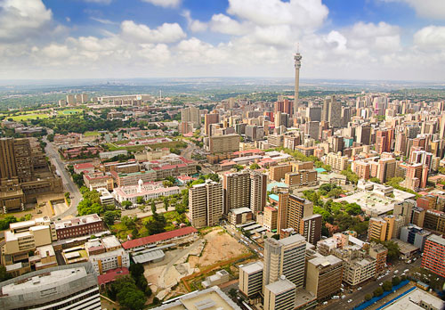Sudáfrica es una de las economías más representativa de África. Concentra el 75% del sector industrial de este continente.
03.3Consolidación
Actividades para consolidar lo que has aprendido en esta sección.
-
04
Competencias
Open or ClosePon a prueba tus capacidades y aplica lo aprendido con estos recursos.
-
Fin de unidad:
Open or Close
repasoWebs de referencia
- Portal del Instituto Geográfico Nacional (IGN): ofrece información sobre distintos aspectos de la geografía de España y el mundo.
- Web oficial de la Unión Europea: contiene información sobre los distintos ámbitos de actuación de la UE y de sus instituciones, así como de su historia.
- Página oficial de la ONU: presenta información sobre la Organización de las Naciones Unidas.